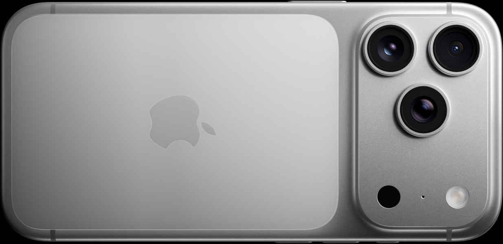

Apple Store portfolio

179,800円から
または4,994円/月の36回払いから

最大
8倍
の光学品質ズーム
すべてが
48MP
のバックカメラ
iPhone 17 Proのカメラシステムには、
イノベーションが惜しみなく注ぎ込まれています。
望遠には、次世代のテトラプリズムデザインと56%大きくなったセンサーを採用。
200mmの焦点距離に相当するiPhone史上最高の8倍光学品質ズームを実現しました。
光学ズームレンジが16倍になったので、
これまでにない自由度でクリエイティブな表現を追求したり、
もっと遠くの被写体に寄ることもできます。
48MP Fusionメインカメラ
24/48mmの焦点距離（1倍/2倍）
ƒ/1.78絞り値
2.44μmのクアッドピクセル
（個々のピクセルは1.22μm）
48MP Fusion超広角カメラ
13mmの焦点距離（0.5倍/マクロ）
ƒ/2.2絞り値
1.4μmのクアッドピクセル
（個々のピクセルは0.7μm）
48MP Fusion望遠カメラ
100/200mmの焦点距離（4倍/8倍）
ƒ/2.8絞り値
1.4μmのクアッドピクセル
（個々のピクセルは0.7μm）
ホームビデオからハリウッド映画まで。
あらゆる撮影で実力を発揮するiPhone 17 Pro。
進化したビデオ手ぶれ補正、映画レベルのスペック、そして業界標準のワークフローへの対応。
かつてないほどにプロ仕様のパワフルな映像制作ツールを、
どこへでも持ち歩けます。
iPhone 17 Proは、先進的な冷却システムを採用。
負荷の高いグラフィックスを処理する時も、巨大なメディアファイルで作業する時も、突き抜けたパフォーマンスを可能にします。
レーザー溶接されたApple製のベイパーチャンバーをアルミニウムUnibody構造に組み込むことで、
A19 Proチップから出る熱を効率的に分散。
より高いパフォーマンスを長時間持続させます。
この画期的な熱処理方法こそが、史上最もパワフルなiPhoneを動かす鍵です。
A19 Proチップ
iPhone 17 Proを動かすAppleシリコンは、iPhone史上最高のパフォーマンスを発揮。
ハイレベルなゲームプレイや最も負荷の高いタスクに理想的です。
グラフィックスとスピード
画期的な冷却システムと組み合わせることで、
GPUとCPUによる最大40%高いパフォーマンスが長く持続します。
Neural Accelerators
それぞれのGPUコアがNeural Acceleratorsを内蔵しているので、
ローカルAIモデルを動かす時でもかつてないほどパワフルです。